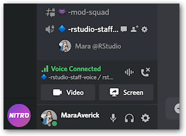
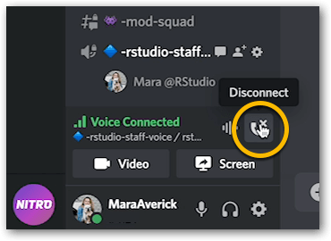

- admin
- moderator
- instructor or TA
- staff
- workshop attendee
- community member
- has not accepted code of conduct yet
Discord Tips & FAQs
We‚Äôve tried to include some helpful information below. However, once you‚Äôve joined the server, don‚Äôt hesitate to ask questions in the üßê-discord-help-and-how-to channel (where you‚Äôll have access to the combined wisdom of the community)!
Discord support resources
Before we get into tips and tricks of our own, here are some helpful links provided by Discord Support that are worth checking out if you’re new to the platform:
Why can I only see one channel?
Short answer: You have yet to agree to the Code of Conduct.
How to fix this
Again, the short answer is to click the ✅ icon in the #code-of-conduct channel (thereby accepting the Code of Conduct). But, here is a step-by-step breakdown of what that will look like:
When you first join the rstudio::conf(2022) Discord, you’ll only see one channel, and your name will be in white. So, basically, you’re not fully activated.

To agree to the Code of Conduct, you check the green checkbox icon as a reaction to the lone post in that channel.

Once you have agreed to the Code of Conduct, other channels will appear in the sidebar!

Expand to view as animation
How do I disconnect from a voice channel?
You’ve connected to a voice channel, and are ready to take your leave. But how?!
Towards the bottom of the sidebar where the channels names are shown (just above your user name and settings), there’s a section showing your voice connection. Go to it.

On the right-hand side of that box there is a call-connection icon (a phone with an ‘x’ above it). Click on the call-connection icon to disconnect.

For a more detailed breakdown with device-specific screenshots, check out How to Leave a Voice Channel in Discord.
Bonus tip: Mute yourself
Want to make sure your conversation with your cat isn’t overheard when you’re in a voice channel? Mute yourself! You can toggle mute by clicking the microphone icon next to your name in the bottom of the left-hand sidebar, or by using the default keyboard shortcut: Ctrl + Shift + M.
Just like with Zoom or *insert your fave video-chat platform here*, voice channels on Discord work better when folks who aren’t speaking are muted, anyhow!
How do I change my nickname on the server?
Already a Discord user and want to use a handle (e.g. your real name) different to the one you use for your other Discord servers? You can change your Server Nickname in the rstudio::conf Discord by going to Edit Server Profile.
You can get to Edit Server Profile by right-clicking your username in the Server Member List (the sidebar on the right), and selecting Edit Server Profile from the dropdown.
For more options and details, see Discord Support’s Server Nickname page.
Why are people’s names different colors?
The color of a person’s name indicated their highest Role on the Discord server’s role list.